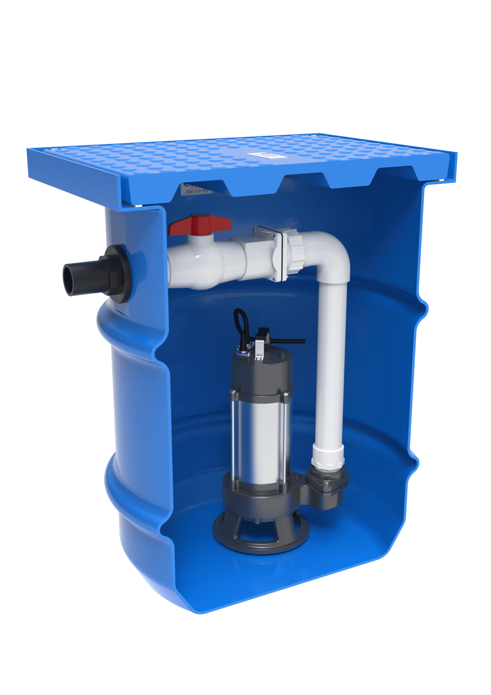
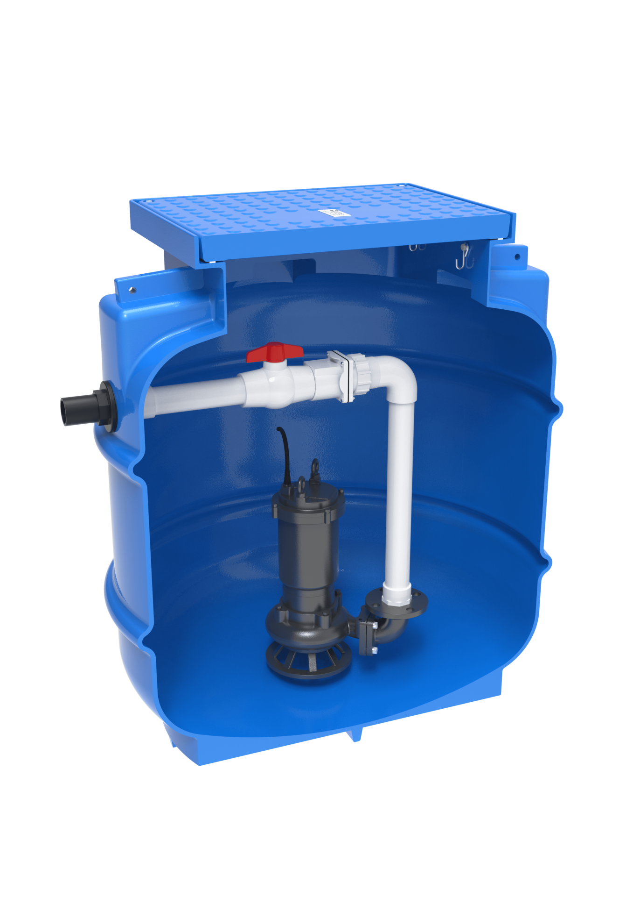
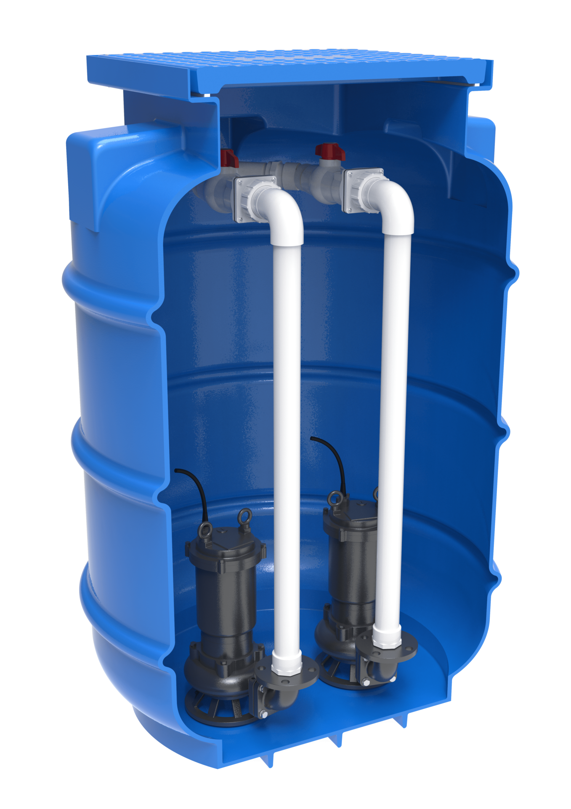
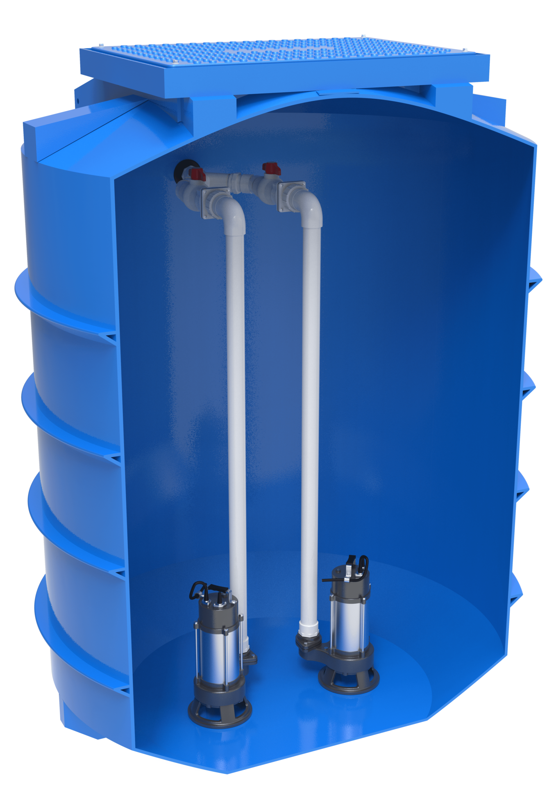
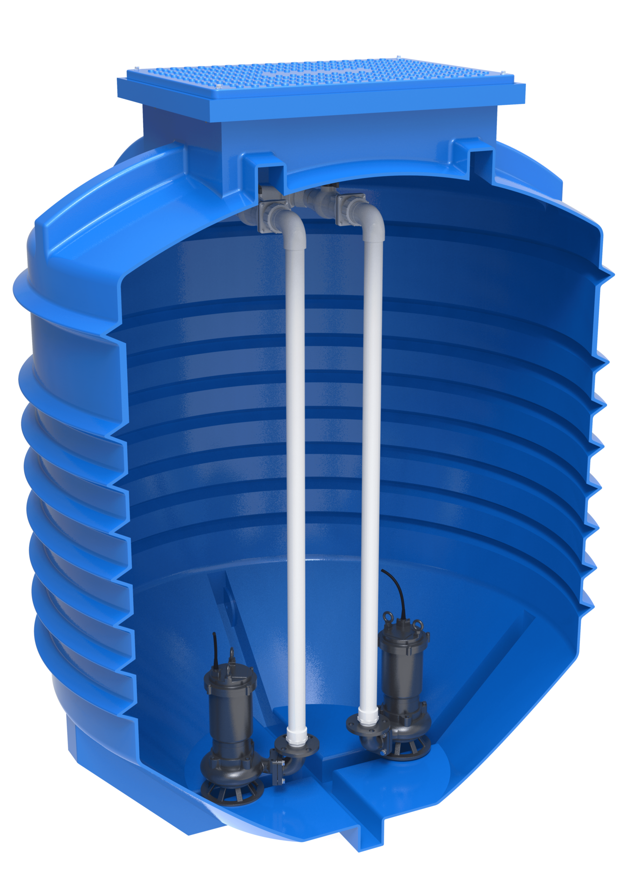
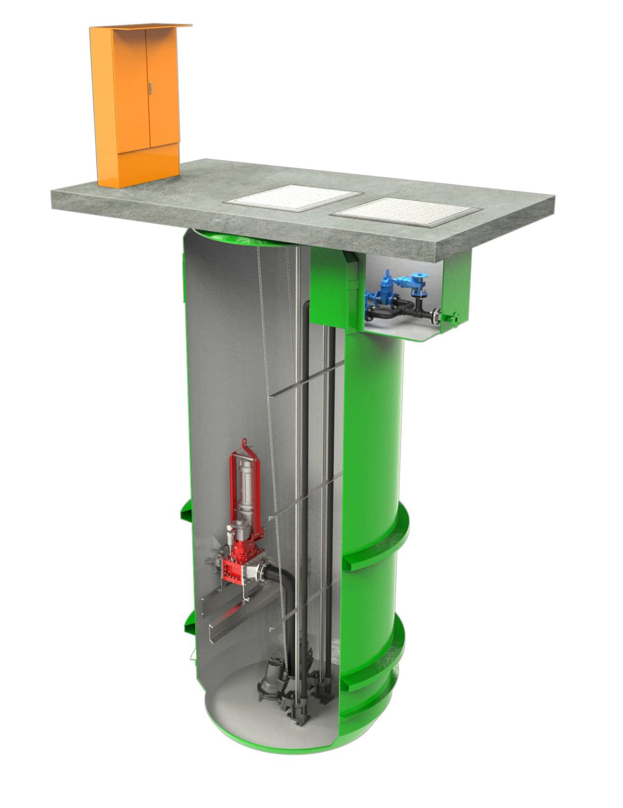
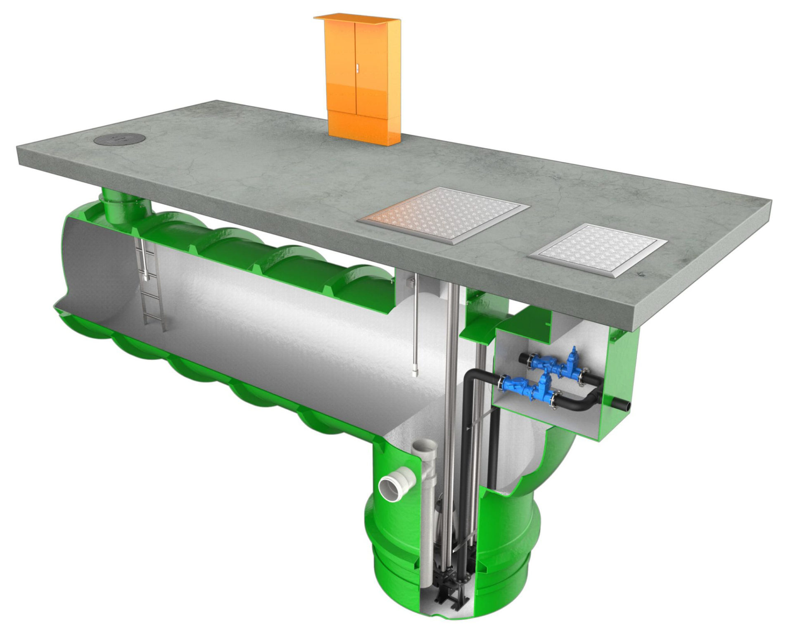
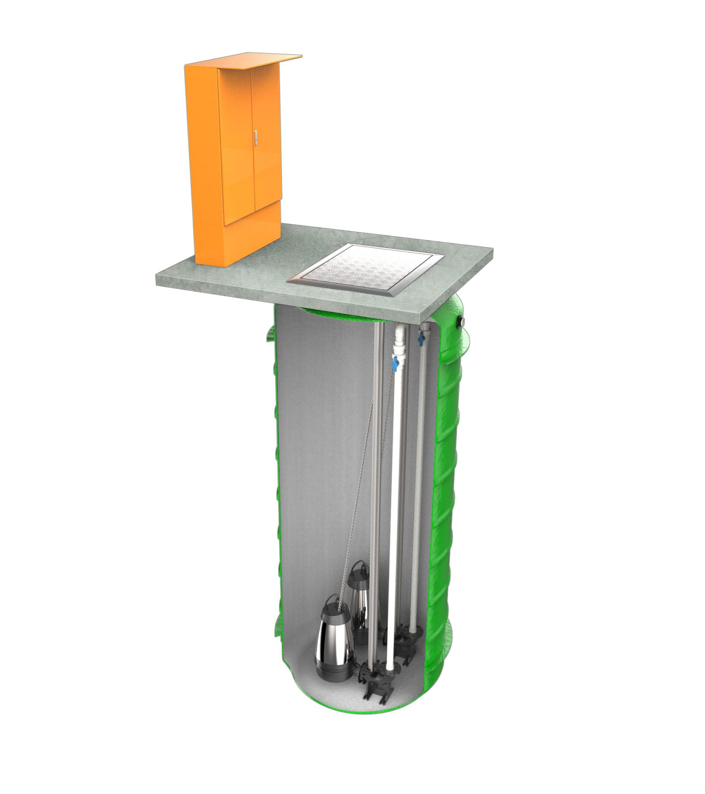
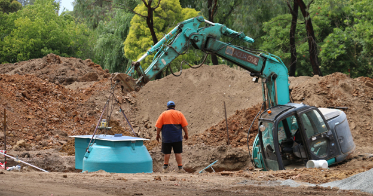
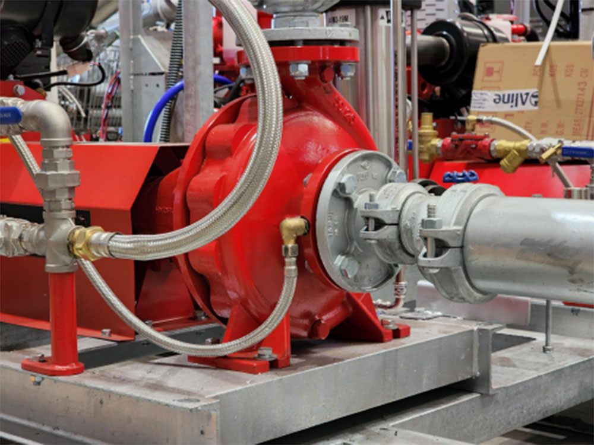

What Are Undersink Pump Stations?
Under sink pump stations are devices used to move wastewater, where gravity does not assist in moving the water to the sewer. Commonly used in homes…
Read articleKwikflo Pump stations set the industry benchmark, boasting an extensive range with over 30 years of experience in packaged pump station manufacture. Aline produces high-quality products with short lead times and can engineer solutions tailored to your exact specifications.
The Aline Packaged Pump Station offers a quick and reliable solution for efficiently pumping sewage or stormwater to a mains connection. Each station comes as a fully assembled package that includes an access cover, valves, and internal pipework, all configurable to meet specific requirements. Our experienced sales team can adjust tank size, pump type, guide rail options, and cover type, offering single, dual, or triplex pump configurations. Standard offerings include 100-5000L Poly tanks, with custom fiberglass tanks available in specified sizes. Pipework and valving range from 32-100mm, and both poly lids and various AS3996 rated access covers are available, ensuring a fit-for-purpose design for any setup.

11 products











Under sink pump stations are devices used to move wastewater, where gravity does not assist in moving the water to the sewer. Commonly used in homes…
Read article
Sewer pump stations play a critical role in providing efficient water and sewage services. In its raw form, sewage is not environmentally safe and…
Read article
A Pressure Pump for Every Application in Australia Aline offers a large range of solutions for various different pump applications. We work with…
Read article
Australia’s Innovation of the Submersible Pump Over The Years As Australia’s preferred pump supplier, Aline Pumps celebrates innovation in pumping…
Read article
Aline Pumps provides Australia’s best selection of all purpose pumps, with a sump pump range trusted by builders, plumbers and fire protection…
Read article
A centrifugal pump works by converting rotational energy into fluid movement. As the impeller spins, it creates centrifugal force that pushes liquid…
Read articleAsk our team to confirm the right fit for your application.
Ask for product adviceSend your application requirements to Aline Pumps or call 1800 018 999.